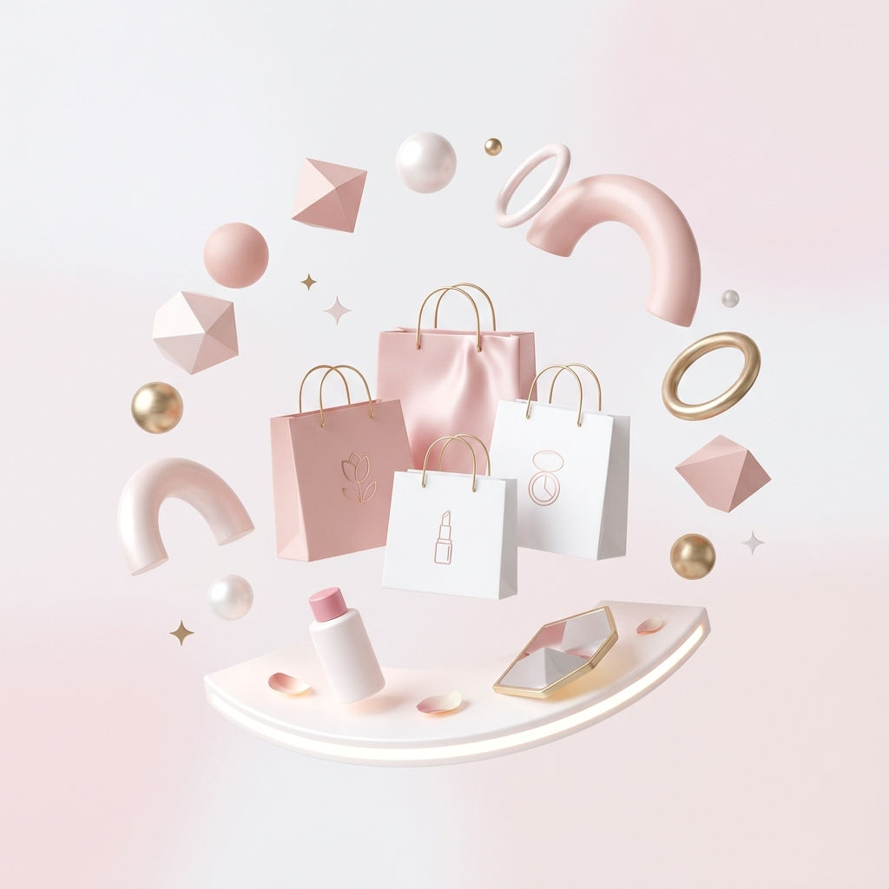

대규모 트래픽 대응 뷰티 커머스 플랫폼

4인 팀으로 진행한 뷰티 커머스 백엔드 프로젝트입니다. 대규모 트래픽 검증 환경 구축을 담당했으며, 트래픽 증가 상황에서 발생할 수 있는 병목과 장애를 사전에 검증하는 데 집중했습니다. Multi-Level Cache 아키텍처와 분산 부하 테스트 환경을 구축하여 검색 성능을 개선하고, 대규모 요청 환경에서도 안정적으로 동작할 수 있는 기반을 마련했습니다.
Java / Spring Boot Multi-Level Cache Redis Pub/Sub Load Testing (k6) Index Tuning
(※ 시스템 아키텍처 다이어그램 - 추후 실제 다이어그램으로 교체 예정)
선착순 쿠폰 발급 및 동시성 검증 과정에서 단일 k6 인스턴스만으로는 충분한 부하 생성이 어려웠으며, 실패 요청의 상세 응답을 수집할 수 없어 장애 원인 분석에 많은 시간이 소요되었습니다.
k6 단일 인스턴스의 부하 생성 한계를 해결하고 장애 분석 효율성을 높이기 위해 분산 부하 테스트 환경과 서버 측 실패 로그 수집 체계를 함께 구축했습니다.
최대 Virtual User 약 200명에서 1,000명 이상(5배 확장)으로 검증에 성공. 실패 원인 분석 시간을 30분에서 1분 이내로 단축하여 대규모 트래픽 환경에 대한 부하 테스트 신뢰성 확보 및 원인 추적 대응 속도를 향상했습니다.
부하 테스트 결과 검색 API에 동시 요청이 집중될 경우 데이터베이스 직접 조회로 인해 평균 응답 시간이 4.35초까지 증가하고 에러율이 2.75% 발생하는 문제를 확인했습니다. 사용자는 상품 검색 결과를 확인하기까지 긴 대기 시간을 경험하고 있었습니다.
단순 Redis 캐싱만으로는 네트워크 호출 비용이 존재한다고 판단하여 Caffeine(L1 Local Cache) + Redis(L2 Remote Cache) 기반의 Multi-Level Cache 아키텍처를 도입했습니다. 또한 Scale-Out 환경에서 발생할 수 있는 캐시 데이터 불일치 문제를 해결하기 위해 Redis Pub/Sub 기반 캐시 무효화 전략을 적용했습니다.
평균 응답 시간 4.35초 수준의 병목 구간 해소 및 에러율 2.75% 발생 구간 개선(0%). VU 1,000+ 환경에서도 안정적으로 검색 서비스를 제공하며, 데이터베이스 조회 부하를 감소시켜 사용자가 상품 검색 결과를 보다 빠르게 조회할 수 있도록 개선했습니다.
대규모 상품 데이터 환경에서 카테고리, 상품 상태, 상품명 조건 및 정렬이 포함된 검색 쿼리 실행 시 Filesort가 발생하며 응답 속도가 저하되는 문제를 확인했습니다. 또한 사용자의 검색 데이터를 활용한 검색 경험 개선이 필요했습니다.
실행 계획(EXPLAIN)을 분석하여 실제 검색 패턴에 최적화된 복합 인덱스(category_id, status, name)를 설계했습니다. 또한 실시간 인기 검색어 기능 구현을 위해 정렬 및 랭킹 조회에 강점을 가진 Redis Sorted Set(ZSet)을 활용했습니다.
검색 쿼리 성능 개선 및 Filesort 제거 성공. 실시간 인기 검색어 기능을 제공하여 사용자 검색 데이터 기반 탐색 경험을 크게 향상시켰으며, 데이터 증가 상황에서도 안정적인 검색 성능을 확보했습니다.
(※ 화면 스크린샷 - 추후 실제 이미지로 교체 예정)